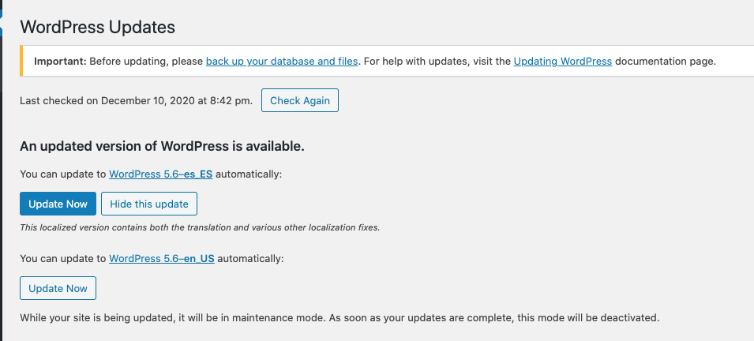
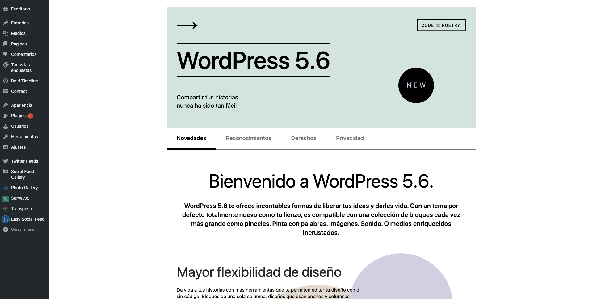
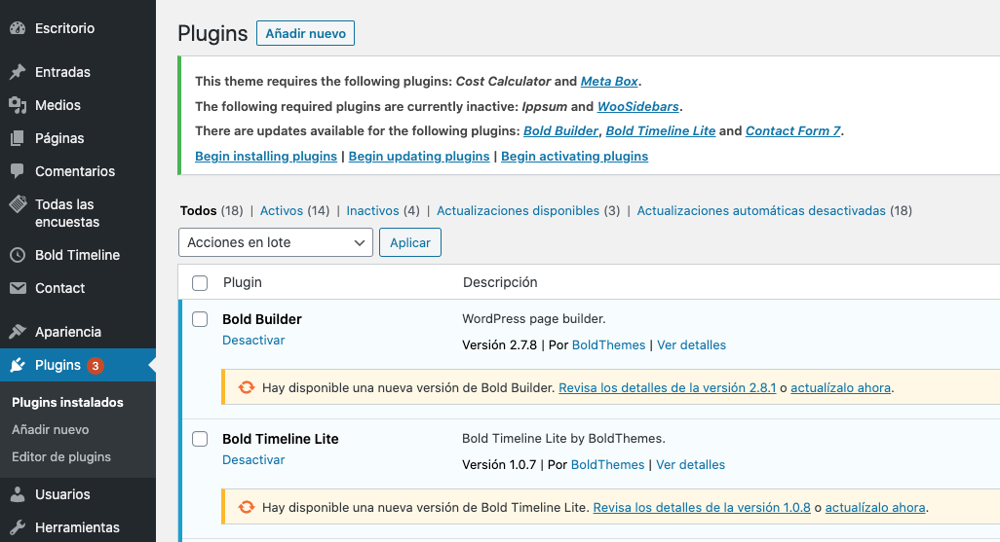
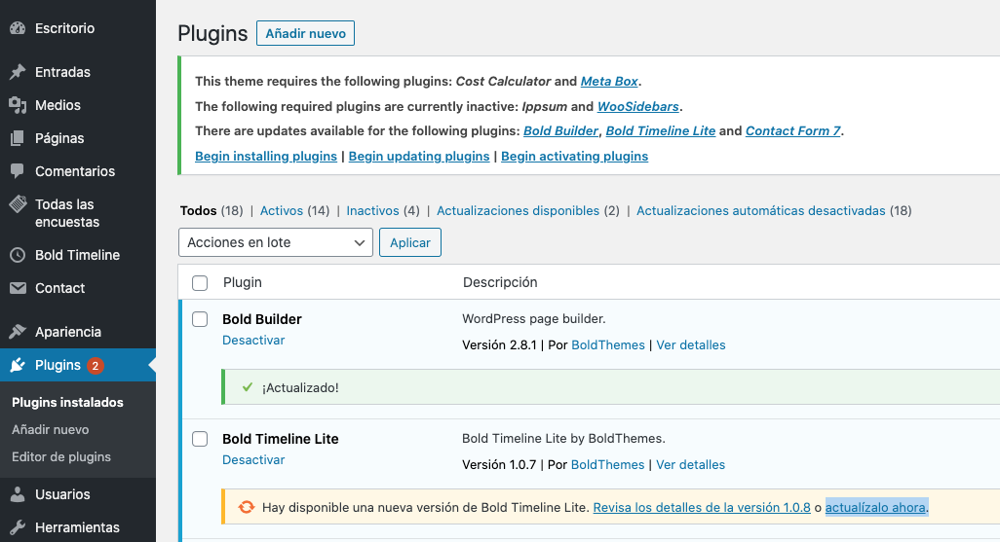
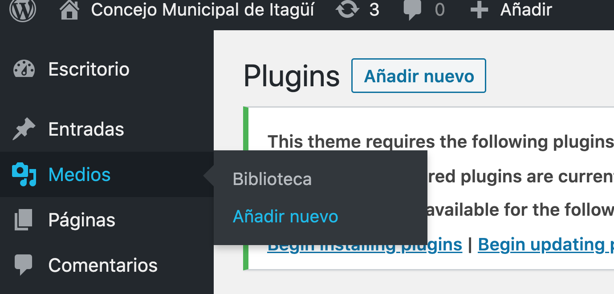
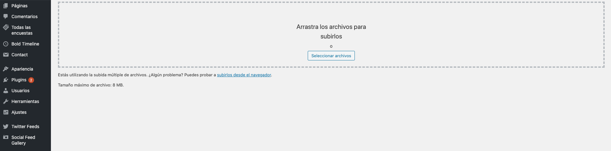
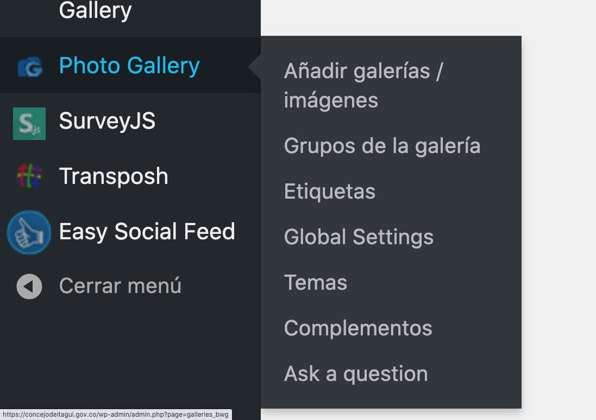
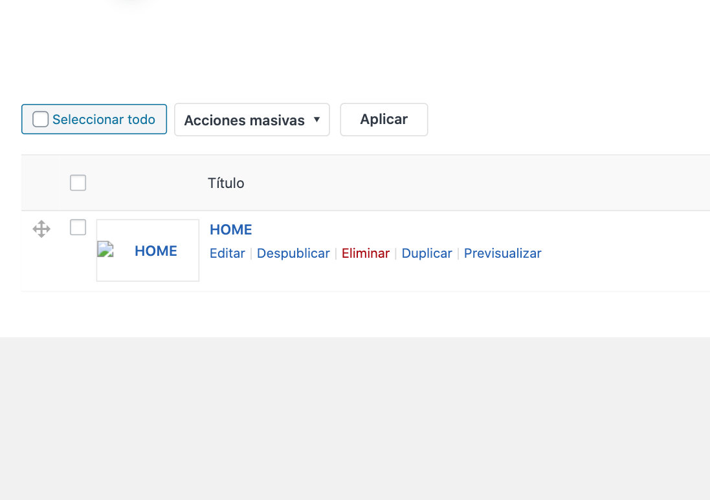
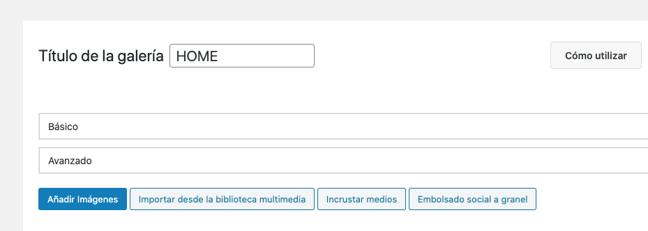
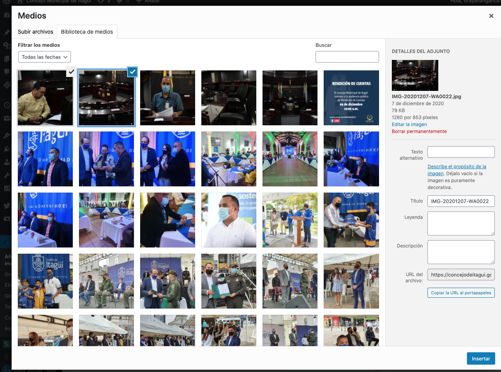

Correo electrónico: el correo electrónico designado al personal de sistemas
Contraseña temporal: b5DJi9xP^Czns7@Wj6EHi@8t
La plantilla utilizada para el desarrollo se llama Ippsum, su creador es una empresa llamada Bold Themes. La documentación de esta plantilla (por si se quiere personalizar está en el siguiente enlace): https://documentation.bold-themes.com/ippsum/.
En la documentación anteriormente mencionada (la cual se encuentra en inglés) se encuentran opciones como:
La url para iniciar sesión es https://concejodeitagui.gov.co/wp-admin/.
Los datos de acceso se proporcionaron al inicio de la guía.
sidebar son bastante descriptivos.
WordPress proporciona actualizaciones continuamente, es por esto que es necesario estar actualizando a estas versiones recientes. Para actualizar la versión de WordPress se deberá esperar el mensaje de solicitud de actualización.
Este aviso se muestra en la página de administración o se puede comprobar a través de este enlace: https://concejodeitagui.gov.co/wp-admin/update-core.php
Para actualizar la versión actual de WordPress se debe presionar en el botón Update Now.
En este caso, WordPress se ha actualizado a la versión 5.6 y en esa pantalla describe todo lo que trae esa versión. Dicha información puede ser consultada a través de el siguiente enlace https://concejodeitagui.gov.co/wp-admin/about.php.
Otros elementos que deberán actualizarse son los Plugins o Complementos. Para acceder a ellos se debe hacer clic en Plugins o a través del enlace https://concejodeitagui.gov.co/wp-admin/plugins.php. Para actualizar cada plugin se debe hacer clic en actualízalo ahora.
Después de actualizado se mostrará una alerta en color verde.
Hay diferentes maneras de subir imágenes a la galería. La opción recomendada es acceder a Medios > Añadir nuevo
Se deberán seleccionar los elementos desde el explorador (Mi PC, mis documentos y demás) o se pueden arrastrar las imágenes a la caja.
Una vez subidas las imágenes se debe acceder a Photo Gallery y seleccionar Añadir galerías / imágenes.
Para editar las fotos de la galería se debe seleccionar la opción Editar.
El complemento tiene varias opciones para agregar más imágenes. La mejor manera es con la opción Importar desde la biblioteca multimedia.
Esto abrirá una nueva ventana modal donde se podrá seleccionar una imagen. O seleccionar varias imágenes presionando la tecla Control (CTRL) o Comando (CMD) en Mac.
Finalmente se debe presionar en Insertar.